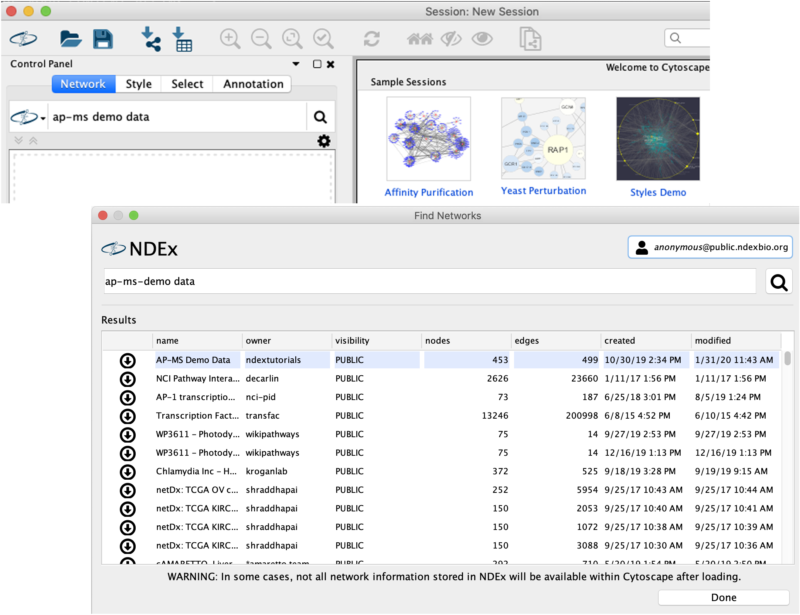
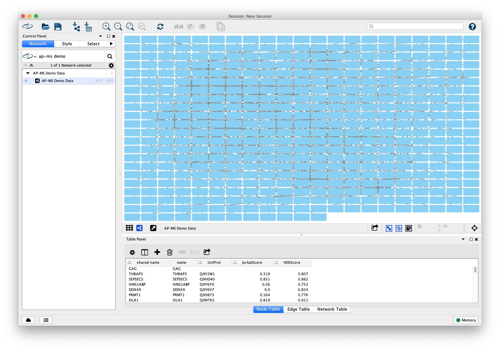
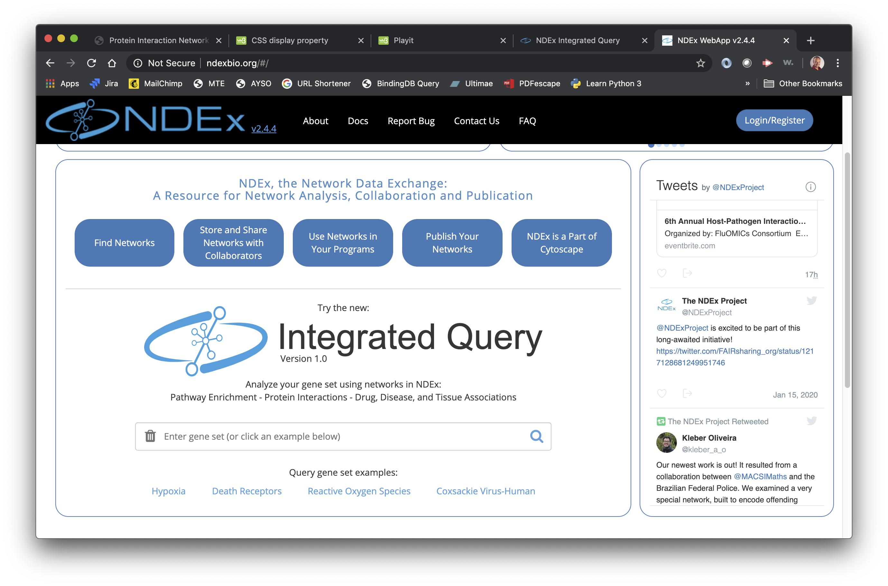
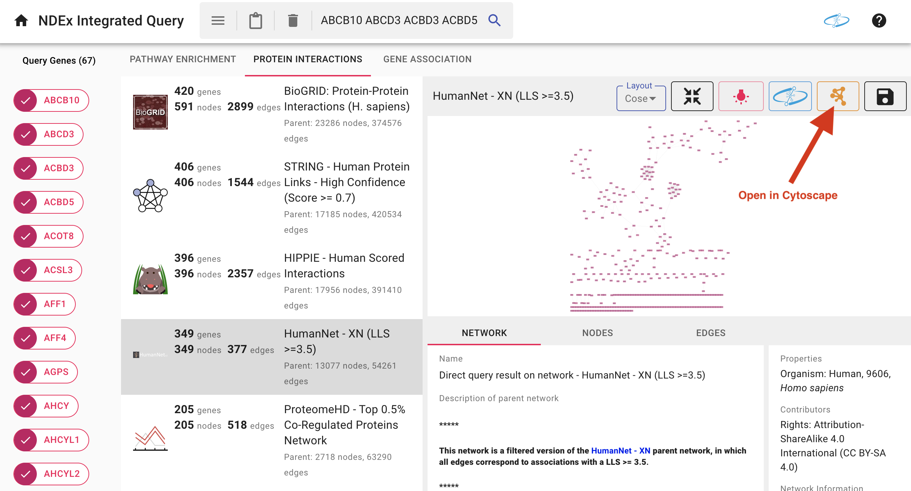
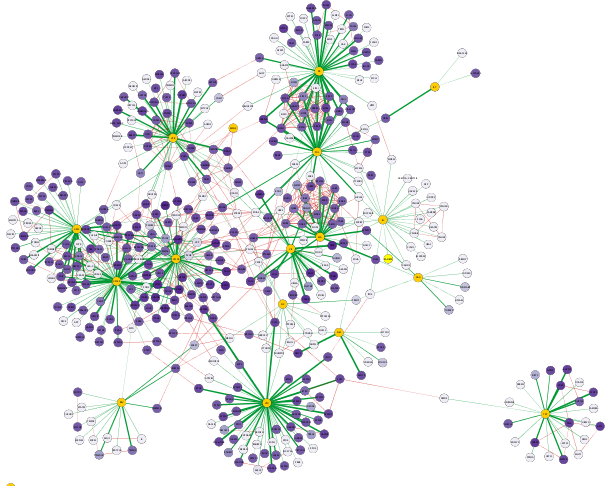
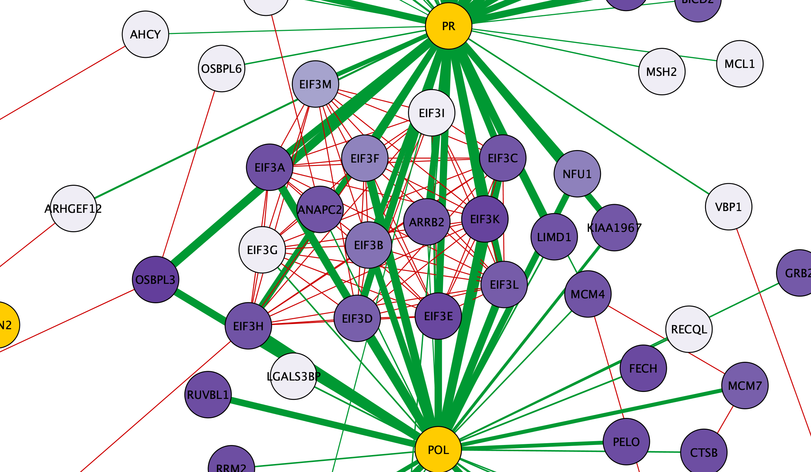
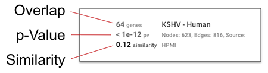
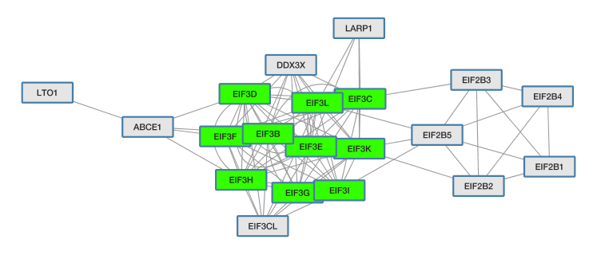
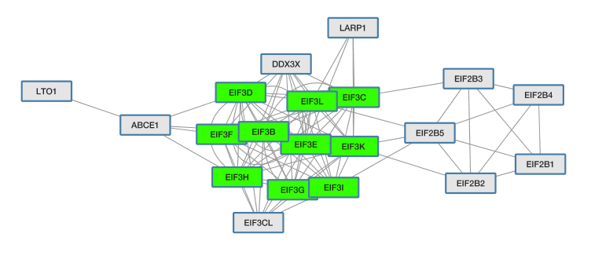
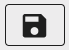

Protein Interaction Network Analysis Using Cytoscape and NDEx
In this tutorial, you will:
- Generate an protein interaction network from tabular interaction data.
- Extend the network with protein interactions from public resources.
- Format the network for effective visualization.
- Find pathways relevant to subsets of the network.
- Open networks from the web in Cytoscape.
- Save networks to NDEx.
- Find drug, gene and tissue associations for a gene set.
- Share Networks via NDEx.
- Export networks as images for publication.

Background
The data used for this protocol is from an affinity purification-mass spectrometry experiment which identified interactions between human and HIV proteins by Jäger et al. In this quantitative AP-MS experiment, a relatively small number of HIV bait proteins are used to pull down a larger set of human prey proteins.
Setup
This protocol requires:
- Cytoscape v3.7.2
- cyNDEx-2 v3.0.0 App (or higher)
To install CyNDEx-2
- Launch Cytoscape 3.7.2.
- Use the App Manager to update the cyNDEx-2 App to the latest version available.
Option 1:Create the Interaction Network from Tabular Data
- Click this link to download the Example data.
- Load the network via
File → Import → Network from File.... , and select the "ap-ms-demodata_simple.csv" file - In the
Import Network from Table dialog, select theBait column asSource Node andPrey column asTarget Node . - Designate the
AP-MS Score as anEdge Attribute . - Designate the
HEKScore as aTarget Node Attribute , by clicking in the column header and selecting the red spreadsheet icon. - Click
OK to import the network.
Note: In cases where a Prey node interacts with more than one Bait node, it will have multiple rows of values for the same attribute (for example HEKScore). During import, the last value imported will overwrite prior values and visualizations using this attribute thus only shows the last value.

Option 2: Import the Interaction Network from NDEx
-
Search the AP-MS Demo Data network in NDEx by typing "ap-ms demo data" in the
NDEx Search Box and clicking the search icon . - A new window will pop up, the cyNDEx Browser... Click the
Import button next to the AP-MS Demo Data network, then close the pop up window.

The Interaction Network
The interaction network consists of multiple smaller subnetworks, each representing an HIV protein (a "bait") node and its associated Human protein ("prey") nodes:

Add Human PPI to the Network
Now extend the network by adding known protein-protein interactions between the Human proteins. This interaction data will be obtained via the NDEx Integrated Query (IQuery) using the human prey proteins from our network.
-
In the
Node Table , sort the table for your network by theUniprot column by clicking on the header once. This will sort for the human protein nodes, which are the ones with entries forUniprot . -
Select all the genes in the
name column that have a correspondingUniProt ID by selecting the top item, then scroll down and hold down Shift and then selecting the last entry. ClickCtrl+C to copy. -
Note: there is a minor issue with selection in which all of the columns are highlighted, not just the one that is selected. While confusing, the selection works correctly.
Add Human PPI to the Network
-
Open your browser, go to the IQuery website, paste the list of gene symbols into the
Query Box and click the search icon to run the query.

Add Human PPI to the Network
In the following results screen, select the

Add Human PPI to the Network
- Select the
HumanNet - XN result. - Click the
Cytoscape icon in the top right portion of the screen to load the result in Cytoscape.
Add Human PPI to the Network
The IQuery result is automatically imported in Cytoscape and the resulting network (named "Direct query result on network - HumanNet - XN (LLS >=3.5)") contains known interactions between human query (prey) proteins, with a LLS score of 3.5 or greater.
Merge Networks
To incorprate these Human protein interactions, merge the AP-MS network with the IQuery result, matching nodes using the official gene symbols in the
- Go to
Tools → Merge → Networks... - In the
Available Networks list, select both networks and click the right arrow to add them to the list ofNetworks to Merge . - Expand the
Advanced Options interface. - In the
Matching Columns field, selectname for the AP-MS network andname for the IQuery result network if they are not already pre-set, then clickMerge .
The Merged Network
When the merged network first loads, it will have the default style inherited from the AP-MS network. All nodes look the same and the layout makes it difficult to interpret.
Apply a Layout to the Network
Improve readability by applying an automated layout:
- Click the
Style tab of theControl Panel , open theStyle Presets dropdown menu, scroll to the right and select thedefault visual style. - Then, Under
Layout → Settings... , select thePrefuse Force Directed Layout and change the settings as follows:-
Default Spring Coefficient = 5E-5 -
Default Spring Length = 100 -
Default Node Mass = 3.
-
- Click
Apply to apply the layout.
Visual Styling Based on Continuous Numeric Data
Improve the visualization by coloring the nodes based on their
- In the
Style tab of theControl Panel , create a new style named AP-MS Jurkat Score. - Create a continuous mapping for the node
Fill Color using theJurkatScore column, then select a purple gradient from theColorBrewer palettes. - Switch the deafult node
Fill Color toyellow to highlight the HIV proteins. - Create a passthrough mapping for node
Label using thename column. - Now switch to the
Edge tab and create a continuous mapping for edgeWidth using theAP-MS Score column. - Set the width values to a range from 1 to 5.
There is a video showing how to perform continuous mapping of data to visual styles.
Visual Styling Based on Discrete Data
Further enhance the network to distinguish HIV-Human interactions from Human-Human interactions by color:
- Create a
Discrete mapping for edgeStroke Color using theinteraction column. Choose a green color for all interactions of type interacts with. This will color all the interactions in the original AP-MS dataset.
There is a video showing how to perform discrete mapping of data to visual styles.
The Improved Visualization of the Network
The visualization of the network now has a more understandable layout and highlights the AP-MS experimental data (green edges), as well as additional known interactions from HumanNet (grey edges), with node color indicating the Jurkat Score for our human query genes.

Inspecting Visualized Interactions
Zooming in on the network, specifically the POL and PR HIV nodes, we can see a set of interactions found in the original paper by Jäger et al, which represent binding of POL and PR with the translational initiation complex EIF3.

Pathway Enrichment with NDEx IQuery
We can find pathways relevant to the host proteins using IQuery. Go back to the IQuery web page, select the

Pathway Enrichment with NDEx IQuery

- Click on the information icon next to the sorting dropdown menu to see the documentation for each sorting method.
- By default, the
Similarity method is used. Choose theOverlap orp-Value methods and the order of the pathways will change.
Each enriched pathway shows its 3 scores
- Note: Because the example network that we chose is also a member of the set of pathways evaluated by IQuery, it is of course the top-ranked network found.
- Select the 5th choice GO:0006413 (translational initiation)
Open in Cytoscape from IQuery
- In the action bar above the network display, click on the Cytoscape icon and the network will be downloaded to the Cytoscape application.
- IQuery has added a column
querynode to nodes in the network to indicate that these are the proteins in the network that match your query. You can use that information to highlight those nodes. - Replace the existing
Discrete mapping for nodeFill Color to instead use thequerynode column. Choose a bright green for the case where querynode istrue , distinguishing the cluster of EIF3 family proteins that are in common between the human prey proteins and this network related to translation initiation.
 

Save to NDEx from IQuery
Go to IQuery to save the pathway to NDEx in your account. If you do not have an NDEx account, make one now, following the Creating and Using an NDEx Account tutorial. Please take note of the password generated for you or create your own. You will need it in the next section.
- In the action bar above the network panel, click on the save icon  and the
Sign in to your NDEx Account dialog will be displayed - Sign in with either your Google account or your account name and password. You will now see a dialog showing that you have successfully signed in.
- Select
Save to My Account and the dialog will update to give you the option to open the network in NDEx. - Select
Open in NDEx and the network will be opened in NDEx in a new browser tab. - When you return to the IQuery browser tab, the dialog will still be open. Click on any part of the window to dismiss the dialog.
Save to NDEx from Cytoscape
Go to Cytoscape and save the pathway network that you modified.
- In Cytoscape, select the GO:0006413 (translational initiation) network in the
Network Tab of the left hand panel. -
Go to
→ Export Network to NDEx - The
NDEx Save Dialog will be displayed, but theSave Button in the lower left corner will be deactivated because Cytoscape is not yet signed in to an NDEx account. - Click on the account manager box in the upper right hand corner, and the account manager will open.
- Click the
Add Account button and then enter your username (account name) and password. Leave the Server Address box empty, letting it default to the public NDEx server.
Save to NDEx from Cytoscape
- When you save a network you can add or edit information about the network or edit its name. Change the network name to HIV prey involved in translational initiation
- Click the
Save Button and after the save is complete, the dialog will update to confirm the save. You can click theGo Back button to dismiss the confirmation and then click theCancel button on theSave Dialog to dismiss it.

Save to NDEx from Cytoscape
- Select the NDEx browser tab displaying the network saved directly from IQuery
- Click on home icon in the menubar and your NDEx account page will be displayed. You will see the network HIV prey involved in translational initiation at the top of the list of your networks.
- You will also see the network you saved directly from IQuery
Pathway Networks from Publications
An important function of NDEx is to enable networks in published papers to be available as computable, interactive data. IQuery takes this function a further step, enabling published networks to be discoverable as part of pathway enrichment analysis.
- Go to IQuery and select the
Pathway Enrichment tab - As previously noted, the top scoring pathway is the published network corresponding to this data set.
- But note that many of the high scoring pathways are also published host-pathogen networks. This highlights the value of published networks in this analysis: they can be more specific to the query and may be more up-to-date than networks from curated collections.
- In this case, we have found networks that show sub-networks (and potentially mechanisms) shared between HIV and other pathogens
- Select the Ebola-Human network and download it to Cytoscape
Drugs, Diseases, Tissues in IQuery
Protein-disease, protein-drug/chemical, protein-tissue association networks in NDEx can also be accessed in IQuery. To get more focused example results, we will use a smaller set of proteins: the human prey proteins in common between the HIV and Ebola networks.
- In Cytoscape, view the node table of the Ebola-Human network. For convenience, drag the
querynode column to be next to thename column. - Sort the table by the
querynode column and copy the names of the nodes that are also query nodes to the clipboard. - Go to IQuery, clear the current contents of the search box using the trash icon at left of the box. Paste the HIV-Ebola common prey gene names into the box and run the query.
- Now select the
Gene Association tab and review the results of querying the HIV-Ebola gene names vs. the available gene (protein) association networks
Drugs, Diseases, Tissues in IQuery
In this example we find chemicals that could potentially affect the host interactions of both of these viruses.
- In IQuery, select the DrugBank - Combined Network result and download to Cytoscape.
- In Cytoscape, merge DrugBank - Combined Network into Ebola-Human
- Merge DrugBank - Combined Network into the AP-MS data network.
- Comparing the merged networks, we see that the Calnexin (CANX) protein binds both the HIV gp160 and Ebola GP proteins and that it has multiple known chemical interactors.
- In this case, brief literature investigation finds that both the gp160 and GP proteins are involved involved in viral cell attachment, leading to a naive conjecture that chemicals affecting Calnexin could affect cell attachment of both Ebola and HIV.

Saving Your Cytoscape Session
- In Cytoscape, click the Save icon and select a location to save the session file
- The session file is a
snapshot of the state of Cytoscape . - You can pause in your work, close Cytoscape, and later restore your session to resume your work.
-
Note: Any state of the session that relies on a Cytoscape App will only behave as expected if the session is restored to an instance of Cytoscape that has that App loaded. -
Note: Networks downloaded from NDEx are not automatically synced with the original networks on NDEx. Updates to those networks might overwrite a later version on NDEx or fail if the network has been deleted or made read-only on NDEx.
Sharing Networks via NDEx
- Upload the Ebola-Human merged network to your NDEx account
- View the network in NDEx
- Click the
Share button on the lower right - On the
Sharing Page click theEnable Share URL - Click the
Copy URL . - Paste the URL into an email message. Anyone can use this URL to access your network as a read-only document.
- See the documentation on sharing to learn how to share with other NDEx users and groups
Exporting Networks as Images From Cytoscape
- Cytoscape can export the currently viewed network as an image from the File menu:
File → Export → Network to Image... - The file menu also provides an alternative way to export to NDEx:
File → Export → Network to NDEx File → Export → Collection to NDEx